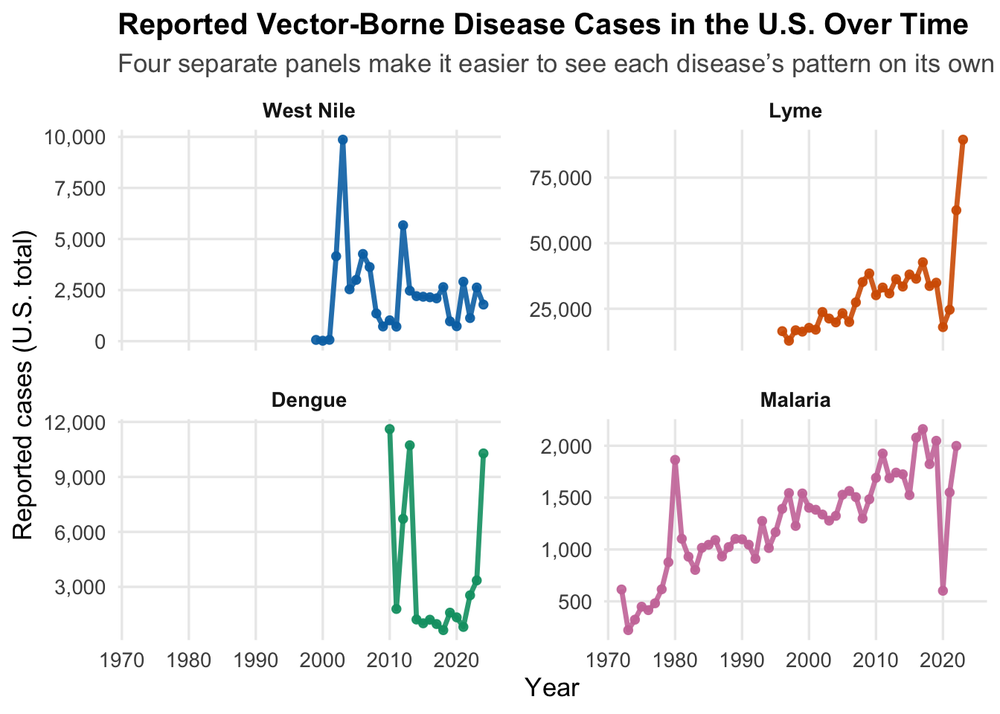
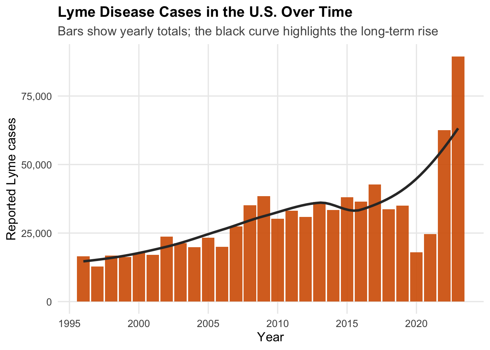
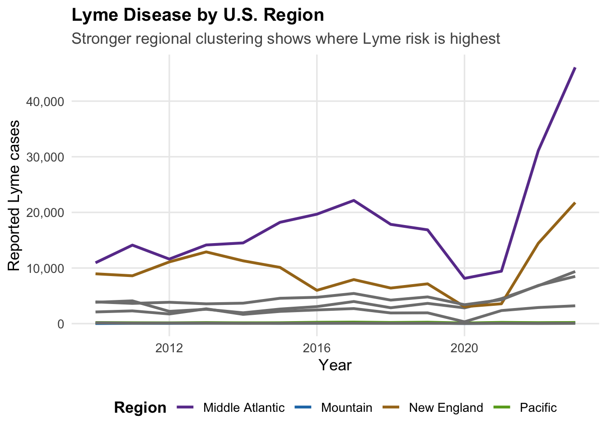
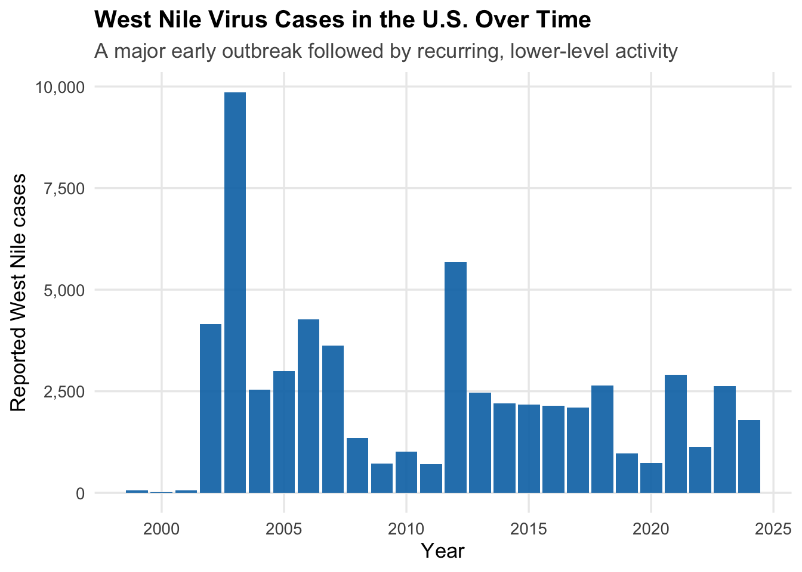
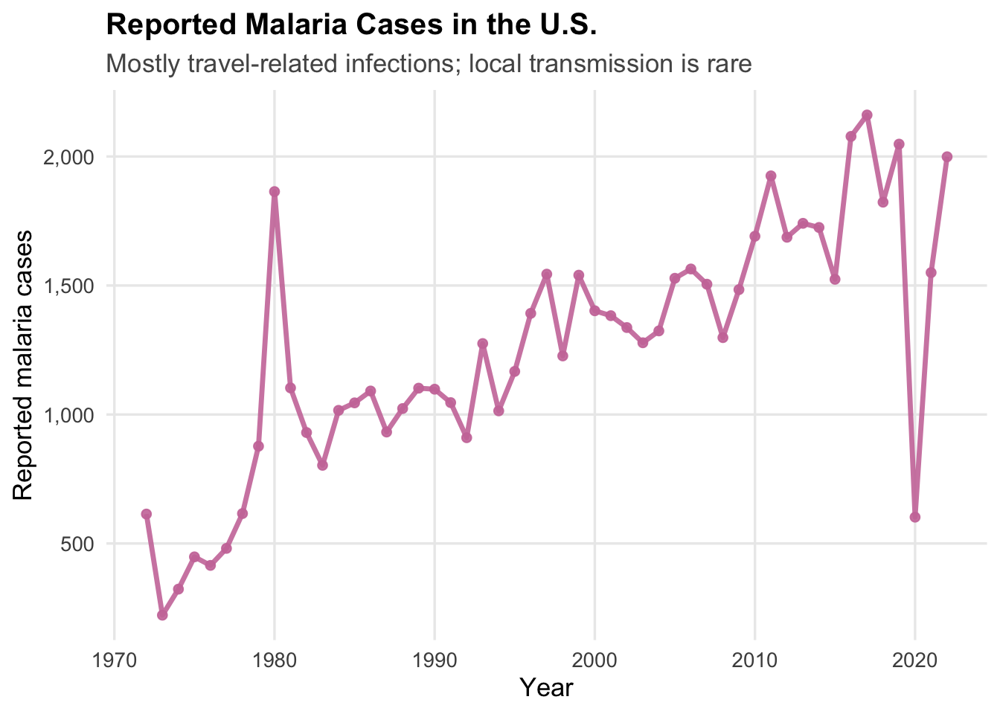
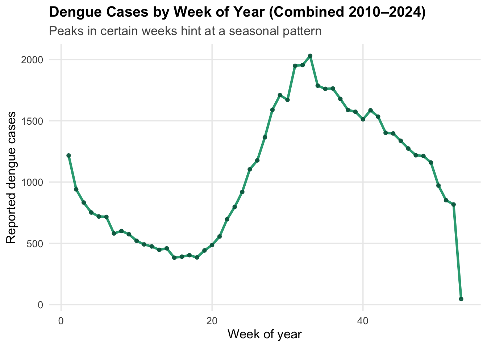

Overview of U.S. Disease Trends
This page looks at how vector-borne diseases have
changed over time in the United States: Lyme disease,
West Nile virus, Dengue, and
Malaria.
The goal here is simple: show the patterns clearly, explain what they
mean in plain language, and keep the heavy R code
hidden in the background. Every chart and table comes directly from the
cleaned datasets used throughout this project.
What Are These Diseases?
Quick overview of each disease and why it shows up in a climate
project.
| Lyme |
Blacklegged ticks |
Wooded / brushy areas where ticks live |
Tick habitat and season length are
climate-sensitive. |
| West Nile |
Culex mosquitoes |
Mosquito bites, often in warm seasons |
Mosquito abundance depends on temperature and
water. |
| Dengue |
Aedes aegypti / Aedes albopictus |
Mosquitoes in warm, often urban environments |
Expands with warming, urbanization, and global
travel. |
| Malaria |
Anopheles mosquitoes |
Mostly acquired while traveling to endemic areas |
Classic climate-sensitive disease globally; still a
travel risk. |
This table sets the stage: all four diseases involve
vectors (ticks or mosquitoes) whose ranges and activity
patterns are shaped by temperature, moisture, and
habitat.
Big Picture: Comparing Disease Trends Over Time

Each colored line is the national case count over time
for one disease. Think of this as four different “heartbeats” on the
same chart.
Key visual takeaways:
- Lyme disease (orange): A clear, long-term
upward climb.
- West Nile (blue): Big early spikes
after it appears, then ongoing activity at lower levels.
- Dengue (green) and Malaria (pink):
Much lower national totals, but still important for
travel and future climate risk.
Are These Trends Statistically Meaningful?
To put numbers behind what we see, we can fit a simple
straight-line trend for each disease:
“On average, are cases going up, going down, or staying flat over
time?”
Simple straight-line trends in reported cases over time for
each disease.
| Malaria |
Increasing (statistically significant) |
256 |
0.000 |
| Lyme |
Increasing (statistically significant) |
13497 |
0.000 |
| West Nile |
No clear linear trend |
-329 |
0.555 |
| Dengue |
No clear linear trend |
-2126 |
0.394 |
How to read this without a stats class:
- Trend direction tells you if the data support a
real increase or decrease.
- Change in cases per decade is a rough “speed” of
change.
- A p-value below 0.05 means the model is confident
the trend is not just noise.
In this dataset:
- Lyme disease: A clear, statistically significant
increase.
- West Nile, Dengue, Malaria: No single clean
up-or-down line; their stories are more about outbreaks
and low-level persistence than a steady climb.
Lyme Disease: A Slow, Steady Climb

What this shows in everyday language:
- Cases were much lower in the earlier part of the
record.
- The black curve is the smoothed trend – it climbs
steadily, even when individual years bounce up and down.
- This fits what we hear from public health agencies: Lyme risk has
become more widespread and intense.
Lyme by Region: Place Matters

How to read this:
- Each line is a broad U.S. region, not an individual
state.
- Some regions sit much higher than others — a sign
that Lyme is geographically concentrated.
- Lower lines don’t mean “no risk,” but they do show that
where you live shapes your odds of exposure.
West Nile Virus: Big Outbreaks, Then a Persistent Background

What stands out:
- After West Nile arrived in the U.S., the early 2000s saw
huge spikes.
- It never fully disappeared — instead, it settled into a pattern of
recurring outbreaks.
- That “spiky” shape is exactly what you might expect from a
mosquito-borne disease shaped by weather,
birds, and water.
Malaria: Low Numbers, High Global Relevance

Reading this:
- Case counts stay relatively low throughout the
record.
- The year-to-year wiggles reflect changes in travel
patterns and screening, more than major local
outbreaks.
- Malaria is still important in a climate project because globally it
is highly climate-sensitive, and travel keeps it on the
radar for U.S. public health.
Dengue: Seasonal Peaks and an Emerging Signal

How to interpret a “week-of-year” graph:
- The x-axis is 1–52, representing the weeks of a calendar
year.
- The line shows combined weekly totals across
multiple years.
- Peaks around certain weeks suggest that dengue cases are more common
during specific parts of the year, which echoes what we
know about warm-season mosquito activity.
Side-by-Side Summary: How Do These Diseases Compare?
Overall comparison of reported cases by disease (U.S. totals).
|
Disease
|
First year in dataset
|
Last year in dataset
|
Total cases (all years)
|
Average cases per year
|
Highest single-year case count
|
Year with highest count
|
|
West Nile
|
1999
|
2024
|
60992
|
2346
|
9862
|
2003
|
|
Lyme
|
1996
|
2023
|
850611
|
30379
|
89468
|
2023
|
|
Dengue
|
2010
|
2024
|
55814
|
3721
|
11611
|
2010
|
|
Malaria
|
1972
|
2022
|
63775
|
1250
|
2161
|
2017
|
How to read this in everyday terms:
- Total cases and average per year
tell you how common each disease has been in this dataset.
- Highest single-year count and its year highlight
big outbreak years.
- Together, these numbers confirm what the graphs show: Lyme is the
slow burn, West Nile is the spiky
newcomer, and Dengue and Malaria are lower but
important signals.
Putting It All Together
- Lyme disease: Long-term, statistically significant
increase, with strong regional patterns.
- West Nile virus: Explosive
introduction followed by recurring outbreaks.
- Malaria and Dengue: Lower U.S. case counts but
tightly tied to global climate and travel.
All four are examples of how climate, ecology, and human
behavior interact: warming temperatures, changing
precipitation, land use, and travel patterns all play a role.
This page is the “disease-only” side of the story.
In the next sections of the website, these patterns are compared against
climate indicators to ask:
“When climate shifts, do these disease curves shift with it?”